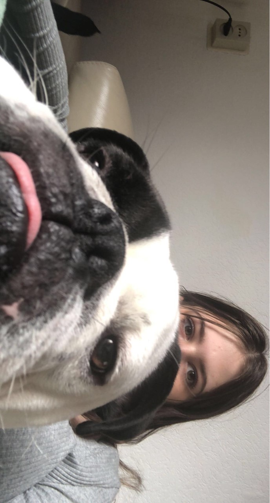

Leeftijd
Rhiannon is 17 jaar oud en is geboren op 28-02-2004
Huisdieren 
Rhiannon heeft een English Bulldog genaamd Billy, die op 3 Oktober 1 jaar wordt
Voetbal
Rhiannon heeft vroeger gevoetbald voor een tijdje en dat deed ze voor een periode daarna had ze eventjes geen zin en was ze gestopt, daarna had ze weer zin en was ze weer gaan voetballen.
Dansen
Toen ze 13 werd begon Rhiannon ook met dansen, ze deed voornamelijk hiphop want daar viel haar interesse in bij dansen.
Hobby's
Rhiannon haar hobby's momenteel zijn gitaar spelen, thuis relaxen en series kijken (valt ook onder thuis relaxen).
Series
Ze kijkt momenteel The Big Bang Theory, Criminal Minds, ze had Lucifer afgekeken en was begonnen aan Prison Break maar al gauw meegestopt, ze heeft ook The Flash afgekeken en Friends dus er valt te zien dat ze verschillende varianten series leuk vindt.
Gitaar
Ze begon vanaf haar 15e met gitaar spelen, omdat haar vader vroeger ook gitaar speelde kreeg ze het makkelijk onder de knie omdat hij het haar thuis leerde en omdat ze muziek ook heel leuk vind.
Sport
Ze doet ook regelmatig thuis sporten, om nog fit te blijven.